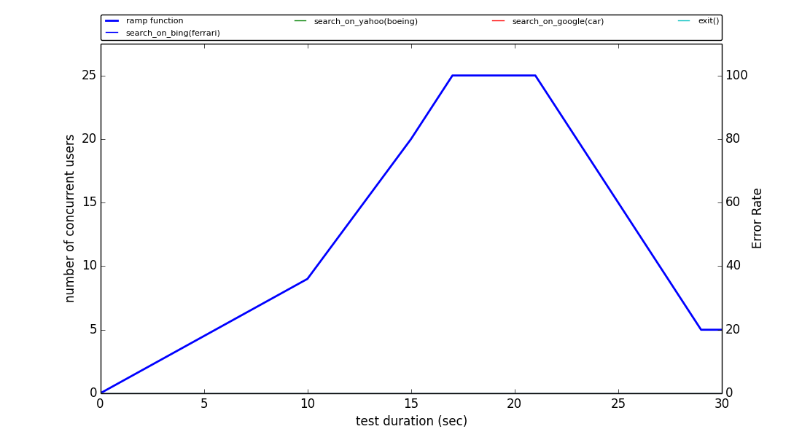
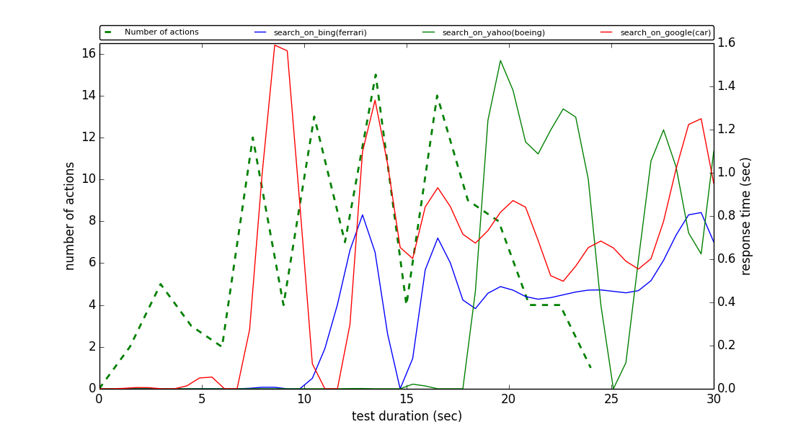
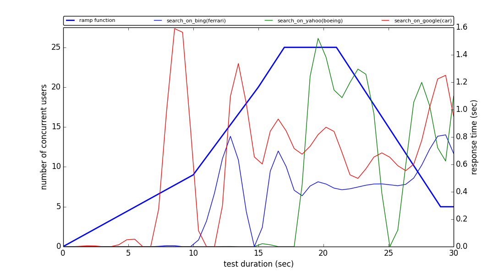
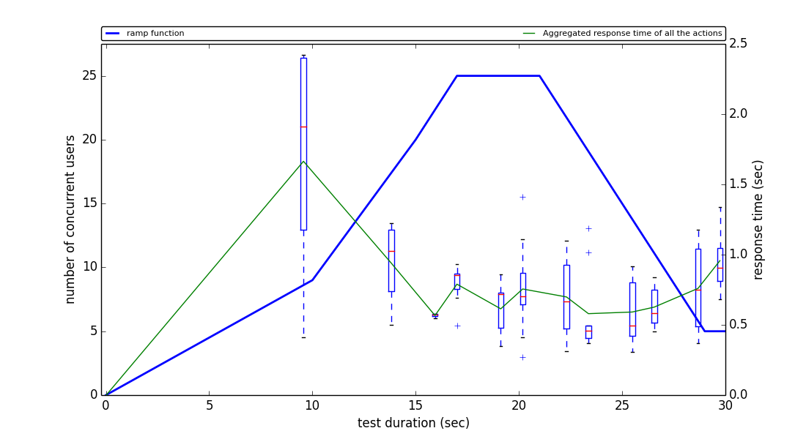

#################### Master Stats #######################
This test was executed at: 2016-25-01 14:37:40
Duration of the test: 30 sec
Target number of concurrent users: 25
Total number of generated users: 111
Measured Request rate (MRR): 3.7 req/s
Number of TEST_USER: 111 (100.0)%
Average number of action per user: 4 actions
This test run ended at: 2016-25-01 14:38:20
######## AVERAGE/MAX RESPONSE TIME per METHOD CALL ##########
| TEST_USER (100.0 %) |
| Method Call | Average (sec) | Max (sec) | Executions # |
| SEARCH_ON_BING(FERRARI) |
0.52 | 1.04 | 32 |
SEARCH_ON_YAHOO(BOEING) |
1.12 | 1.41 | 17 | SEARCH_ON_GOOGLE(CAR) |
0.76 | 2.42 | 62 |
##### AVERAGE/MAX RESPONSE TIME THRESHOLD BREACH per METHOD CALL #####
| Action | Target Response Time | TEST_USER | Verdict |
| Average
(secs) | Max
(secs) | Average
users (secs) | Max
users (secs) | Pass/Fail |
| SEARCH_ON_BING(FERRARI) |
1.0 | 0.5 | 15 (13.4693877551) | 11 (11.0) | Failed |
SEARCH_ON_YAHOO(BOEING) |
1.0 | 0.5 | 25 (18.9795918367) | 25 (19.0) | Failed | SEARCH_ON_GOOGLE(CAR) |
1.0 | 0.5 | 9 (8.57142857143) | 7 (8.0) | Failed |
#################### System Stats #######################
Total Disk read bytes: 0.00 Bytes
Average Disk read bytes: 0.00 Bytes/s
Total Disk write bytes: 224.00 KB
Average Disk write bytes: 5.60 KB/s
Total Network sent bytes: 171.21 KB
Average Network sent bytes: 4.28 KB/s
Total Network received bytes: 882.53 KB
Average Network received bytes: 22.06 KB/s
Physical Memory Usage: 0.84 %
Slave 1 CPU 0 Usage: 19.82 %
Slave 1 CPU 1 Usage: 25.96 %
#################### Misc #######################
Average request size: 1.54 KB
Average user life time: 6.8 sec
Average user think time: 3
Error Rate: 0.0%
Error rate per action

Error Rate
Response times per user type

Response times per action for TEST_USER with respect to throughput

Response times per action for TEST_USER

Box plot for TEST_USER
Number of actions

Number of Actions
Local Resource Usage

CPU and Memory Usage

Network and Disk Usage